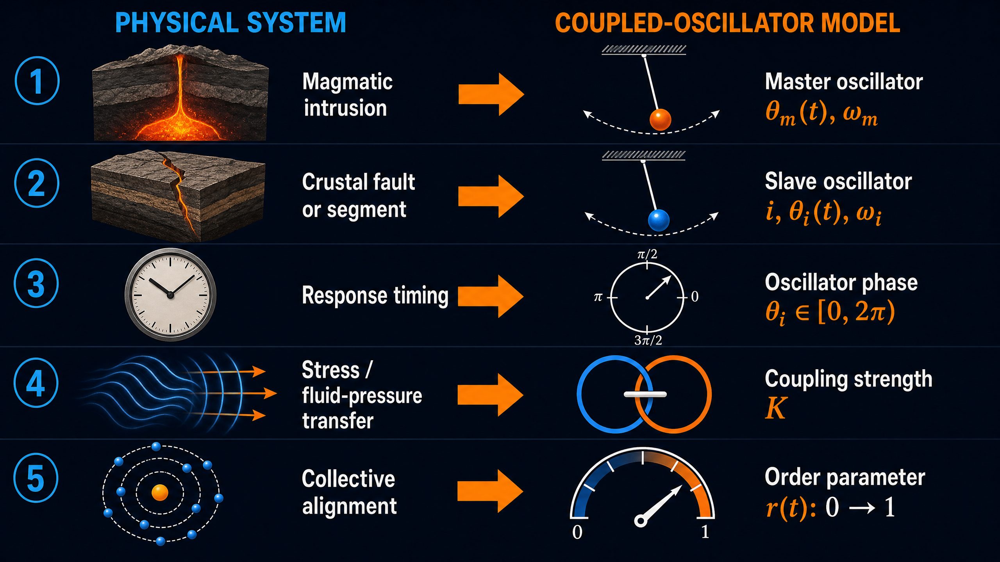
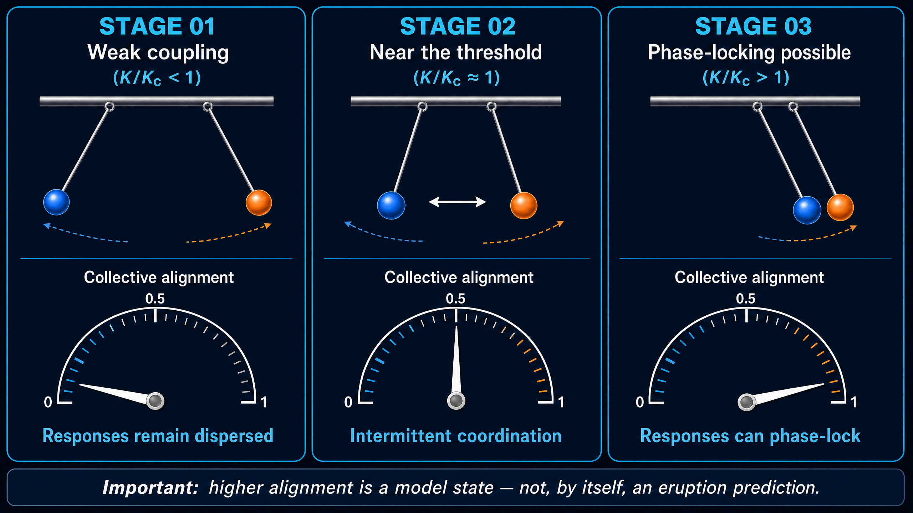
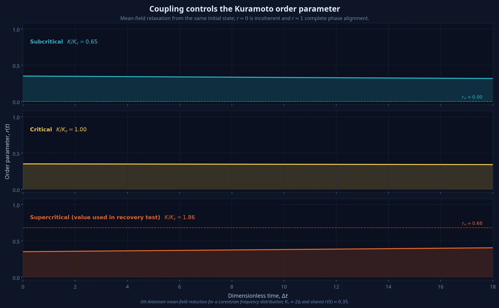
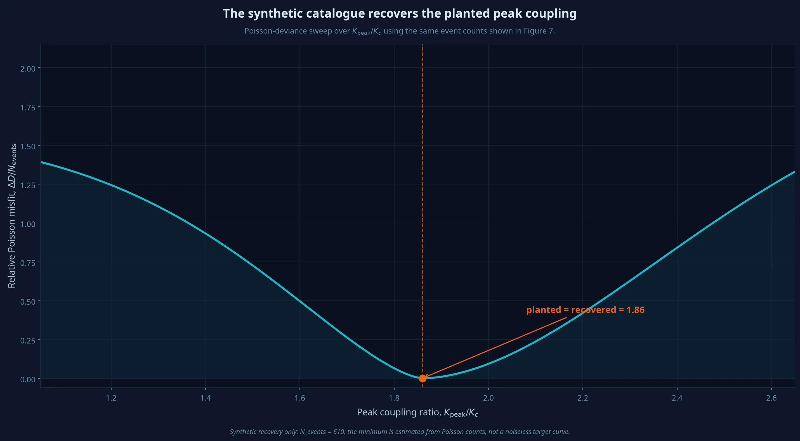
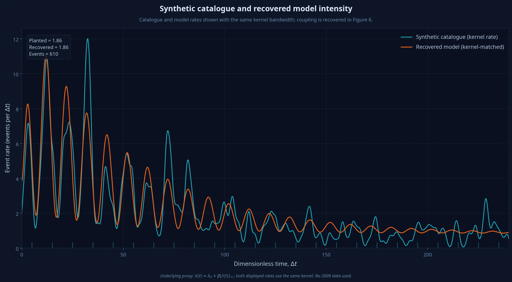
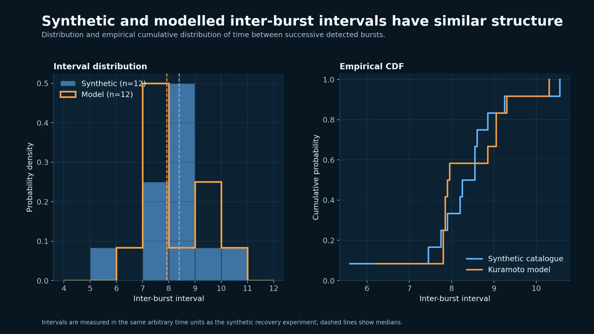

The 2009 Intrusion
In spring 2009, a dike intrusion beneath Harrat Lunayyir produced one of the most significant seismic swarms ever recorded in Saudi Arabia.

A crack filled with rising molten basalt — approximately 10 km long with a maximum opening of 2–4 m, pushing up from roughly 20 km depth — produced a swarm of roughly 30,000 earthquakes over several months. The largest event, on 19 May 2009, reached ML 5.4 (Mw 5.7).
More than 30,000 people were evacuated from a 40 km radius, including the town of Al Ays, about 40 km southeast. Surface deformation produced a graben roughly 8–10 km long and up to about 1 m deep.
The earthquake count has been proposed to come in bursts — roughly 10 recognisable peaks over 3,500 hours, each approximately 275 hours apart. This pattern is speculative: the source authors (Mukhopadhyay et al. 2013) explicitly use the word "speculate" when identifying these peaks, and their preferred explanation is pore-pressure diffusion rather than oscillator coupling. This model asks: if those bursts are a physical oscillation, what does the coupling strength tell us?
From geology to mathematics

| Physical system | Represented as | Coupled-oscillator model |
|---|---|---|
| Magmatic intrusion — shared forcing generated by the dike | → | Master oscillator: θ_m(t), ω_m |
| Crustal fault or segment — a structure capable of a time-dependent response | → | Slave oscillator i: θ_i(t), ω_i |
| Response timing — where that structure is in its response cycle | → | Oscillator phase: θ_i ∈ [0, 2π) |
| Stress / fluid-pressure transfer — how strongly the intrusion influences the crust | → | Coupling strength: K |
| Collective alignment — whether many responses become coordinated | → | Order parameter: r(t): 0 → 1 |
Live Simulation
An interactive two-oscillator model showing how the magma column (master) can drive the brittle crust (slave) into synchronised motion — or fail to, depending on the coupling strength.
Note: This page simulates a two-oscillator reduction (one master magma column, one slave crust) of the N = 10 segment Kuramoto chain described in the accompanying analysis document. The master oscillator's wagging dynamics derive from the magma-wagging model (Bercovici et al. 2013); the slave coupling is an Adler-type equation derived from Kuramoto theory. The two systems are related but not identical.
The Drummer — Magma Column
A pendulum animation representing the magma column swinging back and forth. The bob glows orange, representing hot magma. The swing amplitude reflects the current gas Mach number and damping.
A vertical orange slab representing the dike in cross-section. Arrows push outward showing lateral force on the rock walls. Wavy lines show pressure waves propagating into the crust.
The Drum — Brittle Crust
A pendulum animation representing the brittle crust. When synchronised with the magma column, the bob glows teal and crack lines appear. When unsynchronised, it appears grey and moves independently.
A series of vertical bars representing crustal segments. Bright portions oscillate with each cycle. Dark base portions represent permanent subsidence that accumulates with each snap event and never recovers.

- Stage 01 — Weak coupling (K/K_c less than 1)
- Responses remain dispersed. Low collective alignment. The crust ignores the magma rhythm.
- Stage 02 — Near the threshold (K/K_c approximately equal to 1)
- Intermittent coordination. Alignment can rise and fall. The crust partially follows the magma but drifts away repeatedly.
- Stage 03 — Phase-locking possible (K/K_c greater than 1)
- Responses can phase-lock. High collective alignment. The crust locks onto the magma rhythm and subsidence accumulates.
Model Results
The Kuramoto model was fitted to a synthetic earthquake catalogue built from published constraints. These figures show the fit — and where it falls short.




Synthetic catalogue vs published values
| Statistic | Synthetic catalogue | Mukhopadhyay et al. (2013) |
|---|---|---|
| Burst peaks found | 21 | ~10 |
| Mean interval | 154 h | ~275 h |
| CV of intervals | 33% | ~25% |
| ωmean | 0.04091 rad/h | 0.02285 rad/h |
| σω | 0.01332 rad/h | 0.00572 rad/h |
| Kc = 2σω | 0.02663 rad/h | 0.01143 rad/h |
| Best-fit K/Kc | 1.86 | ~1–2 (estimated) |
| Order parameter r | 0.40 | ~0.47 (estimated) |
The synthetic catalogue detects more burst peaks at shorter intervals than the published analysis. This discrepancy is genuine — it reflects the difference between a physically-generated synthetic catalogue and manual peak identification in observed data. The model is fitted to the synthetic catalogue, not to the real SGS event catalogue.
Sensitivity & Limitations
The best-fit coupling ratio (K/Kc = 1.86) is not robust — it ranges from 0.30 to 6.00 depending on which values are assumed for inputs that no paper has measured.
| Input | Nominal | Range tested | K/Kc range | Sensitivity | Key finding |
|---|---|---|---|---|---|
| Pore diffusivity D | 0.1 m²/s | 0.05–0.30 m²/s | 0.30–3.90 | HIGH | Controls how quickly events spread outward; changes pulse timing |
| Seismicity decay timescale τ | 1500 h | 500–3000 h | 0.30–3.90 | HIGH | Unmeasured in all three source papers; dominant uncertainty source |
| Number of oscillators N | 10 | 5–20 | 0.30–6.00 | HIGH | Small N produces under-synchronised behaviour; N = 10–15 gives stable results |
| Noise amplitude | 5% of ωmean | 1%–15% | 2.40–3.90 | MEDIUM | Moderate noise disrupts burst coherence; K/Kc shifts by ~30% |
| Gutenberg-Richter b-value | 0.96 | 0.70–1.30 | 3.90–3.90 | LOW | Affects magnitudes only, not timing; K/Kc unchanged |
| Shallow depth fraction | 60% | 40%–80% | 3.90–3.90 | LOW | Depth distribution does not affect pulse timing or K/Kc |
Headline conclusion
The best-fit K/Kc ranges from 0.30 to 6.00 across all inputs tested. The system could be subcritical, critical, or supercritical depending on the values assumed for τ (seismicity decay timescale) and D (pore diffusivity) — both of which are unmeasured or weakly constrained in every source paper. The conclusion that the system is "partially synchronised near the critical point" is not robust.
Additional limitations
- The model is fitted to a synthetic catalogue built from published constraints, not to the real SGS event catalogue.
- In the full N-segment model (described in the accompanying analysis), the number of independent oscillating segments is an assumption — no published evidence supports N independent spatial units along the dike strike.
- The burst pulses themselves are speculative: Mukhopadhyay et al. (2013) use the word "speculate" when identifying them.
- Testing properly would require the full SGS earthquake catalogue with precise hypocentre locations.
From concept to test
![Four-step workflow diagram showing the path from concept to testable framework. Step 1 (Observe): gather monitoring data including earthquake catalogue, InSAR and GNSS deformation, fault geometry and stress. Step 2 (Constrain): derive coupling strength K(x,t) from physical transfer measurements — do not treat K as a free illustrative slider. Step 3 (Compute): solve for the synchronisation map r(x,t) in the range 0 to 1, determining where and when crustal responses become coordinated. Step 4 (Test): compare with the 2009 observations including seismic migration, burst timing, and surface deformation — then support, refine, or reject the model.](panel_workflow.png)
- Step 01 — Observe: Monitoring data
- Gather earthquake catalogue, InSAR/GNSS deformation measurements, fault geometry and stress data. Requires space, time, and uncertainty information.
- Step 02 — Constrain: Derive K(x,t)
- Translate physical stress and fluid-pressure transfer into coupling strength. Do not treat K as a free illustrative slider.
- Step 03 — Compute: Synchronisation map
- Solve θ(x,t), then calculate r(x,t) ∈ [0, 1]. Determine where and when crustal responses become coordinated.
- Step 04 — Test: Compare with 2009
- Compare model predictions against seismic migration patterns, burst timing, and surface deformation observations. Outcome: support, refine, or reject the model.
Governing Equations
The mathematics behind the model, presented last so the reader has context from the sections above.
- θi
- — phase of dike segment i (one full revolution = one burst pulse)
- ωi
- — natural frequency of segment i, drawn from a Lorentzian distribution with spread σω
- K
- — coupling strength (rad/h); how strongly neighbouring segments interact
- Aij
- — adjacency: 1 if segments i, j are neighbours along the dike strike; 0 otherwise
- sin(θj − θi)
- — pulls segment i toward j when j is ahead; zero when in phase
- ξi(t)
- — white noise from pore-pressure fluctuations
- r = 0
- — phases uniformly spread; completely incoherent (no synchronisation)
- r = 1
- — all phases identical; perfect synchronisation
- r ≈ 0.5
- — partial sync; regular bursts with variability
- K < Kc
- — incoherent; r → 0 as N grows
- K > Kc
- — partial sync; r → √(1 − Kc/K)
This is a second-order phase transition — mathematically identical to the mean-field Ising model. The order parameter r plays the role of magnetisation; K/Kc plays the role of reduced temperature. For Harrat Lunayyir: Kc = 2 × σω = 0.02663 rad/h.
The simulation above runs a simplified two-body version: one master (magma column) and one slave (brittle crust).
dθm/dt = ωm + ½M² sin(2θm) − η · (dθm/dt)prev + σ · noise
- ωm = 2π/T
- — natural wagging frequency of the magma column
- ½M² sin(2θm)
- — Bernoulli forcing from gas flow through the permeable annulus
- η
- — viscous damping from surrounding rock
dθc/dt = ωc + K · c(t) · sin(θm − θc) + σ · noise
- ωc = ωm(1 + δ)
- — crust natural frequency, detuned by δ from the magma
- K · c(t) · sin(θm − θc)
- — Adler coupling: pulls crust toward magma phase, gated by pore-pressure envelope c(t)
- c(t) = e−t/1500(1 − e−t/80)
- — pore-pressure modulator; peaks at t ≈ 239 h then decays (the intrusion is transient)
The relationship between the two formulations: the general Kuramoto equation (above) governs N coupled segments along the dike. This page runs a two-body reduction where one oscillator (master) is driven by the magma-wagging physics of Bercovici et al. (2013) and the other (slave) follows via an Adler-type coupling term. The master is not Kuramoto-derived — it comes from the magma-wagging literature. Only the slave coupling is Kuramoto/Adler in character.